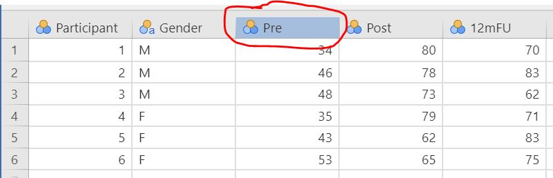
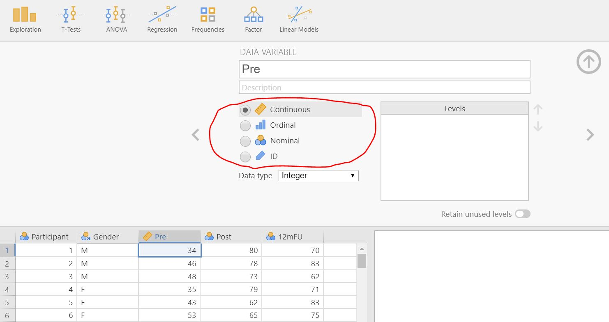
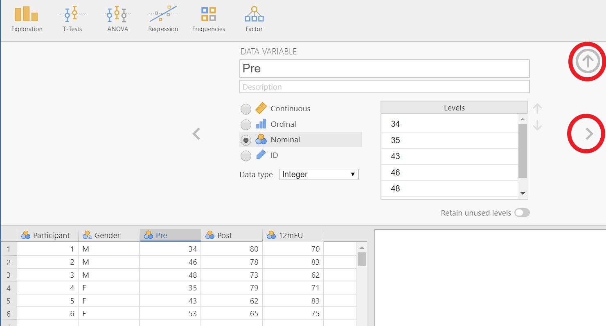

1 Loading and preparing data
When opening and preparing a data file in jamovi, you need to consider three things:
- the file format
- the data format
- the data type
Next, your data format should be in the wide data format (1.2) to be able to perform common analyses like t-test, ANOVA or regression. Once loaded into jamovi, you need to select the appropriate data type (1.3) for each variable.
1.1 File format
If your data file was created by another statistical software (SPSS, Stata, SAS or JASP), you can load that file into jamovi. However, it is likely that your data is in another file format (e.g. Excel). In that case, you need to save your data as a comma delimited file.
1.1.1 Comma delimited data
A comma delimited file has the filename extension “.csv” and contains unformated text, where cells are separated by a semi-colon (se figure 1 below) or another special character. If you have your data in a spreadsheet program (e.g. Excel), you can create a csv-file of your data by selecting File -> Save as... and choose Comma delimited in the drop-down menu near the Save as-button.

Figure 1: A .csv-file opened in a texteditor.
1.2 Data format
Your data needs to be in wide format in order to perform analyses like t-test, ANOVA and regression. Wide data (se figure 2A below) means that there is only one row per participant. This is contrast to long format (se figure 2B below) where each participant may have multiple rows.

Figure 2A: Data in wide format.

Figure 2B: Data i long format.
1.3 Data types
How to set the data type in jamovi:
Double click the variable you want to change.
In the data variable pane, set the variable as ID, Nominal, Ordinal or Continous.
Lastly, press the up arrow to hide the data variable pane, or the right arrow to go to the next variable.
